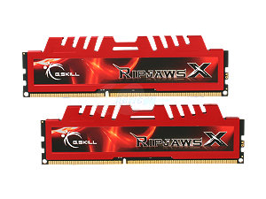
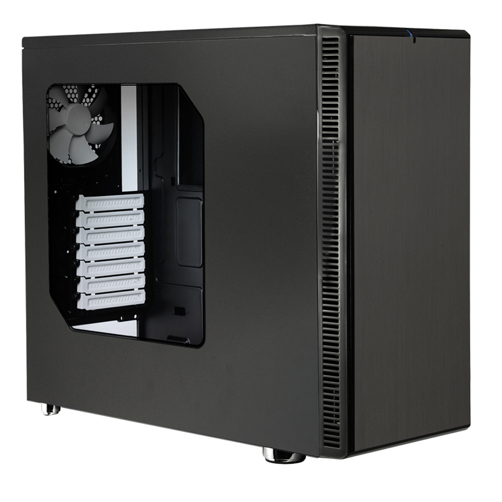

CPU
The CPU is the brain of the computer. The CPU controls everything that is a part of what the computer does.

CPU Cooler
The CPU gets hot really fast and it needs a form of cooling. A CPU Cooler is to make sure that the core doesn't overheat and kill the rest of the computer. The CPU Cooler is a fan in the case of most computers but the fancier builds use a water cooling system.

Motherboard
The motherboard is the piece of gear that is the connecter of all of the pieces of the computer. Every part of the computer is connected to the motherboard in some way.

Memory
The memory of the computer is also called the RAM. RAM stands for Random Access Memory. RAM is used to hold temporary processes on the computer. The RAM is a working area of any running program.

SSD
An SSD is a Solid State Drive. An SSD is not in all computers but in PC builds, there is probably going to be one present. The SSD is considered the workspace of programs because with this extra space, programs can work faster.

HDD
The HDD is called a Hard Disk Drive or you could just call it a Hard Drive. Hard Drives just store data. HDD were first made in the mid '50s by IBM with the total holding size being 350 megabytes and the size of 2 refrigerators. Nowadays, there are up to 8 TERAbytes of HDDs available to the public. To put that into perspective, in about 60 years, we have gone from 350 megabytes of storage space the size of 2 fridges to 8 terabytes of storage space about the size of a smartphone. 1,000 megabytes is equal to 1 gigabyte and 1,000 gigabytes is equal to 1 terabyte. So an 8 terabyte Hard Drive is equal to 8,000,000 megabytes and all of that the size of a smartphone. Of course those large sized Hard Drives have limits. The large sized Hard Drives are usually in computers and most are external.

Video Card
The video card controls the output to a display. A display is anything that can show what the computer is trying to show you. For example, this screen you are looking at, unless on mobile, is being shown through a graphics card of some sort. Some CPUs do have integrated graphics, which mean that this card isn't necessary for small proccesses.

Case
To protect the insides of your computer and to have some sort of base for it to be mounted to, you need a case. In laptops, the case thinly covers the motherboard and all of the other components. In desktops, the case is bigger, holding all of the computer parts with a large amount of space of customization.
